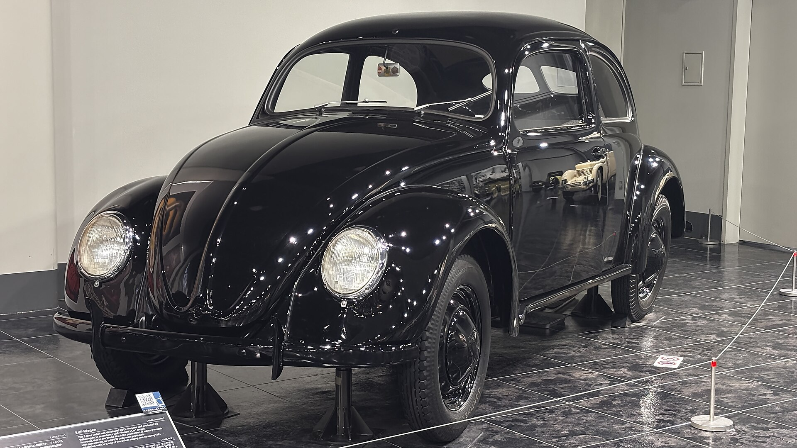
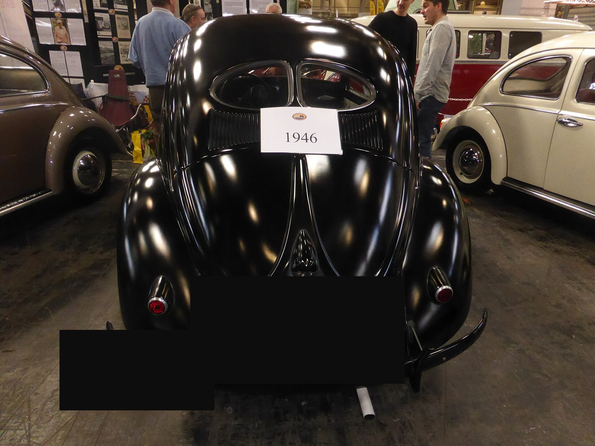
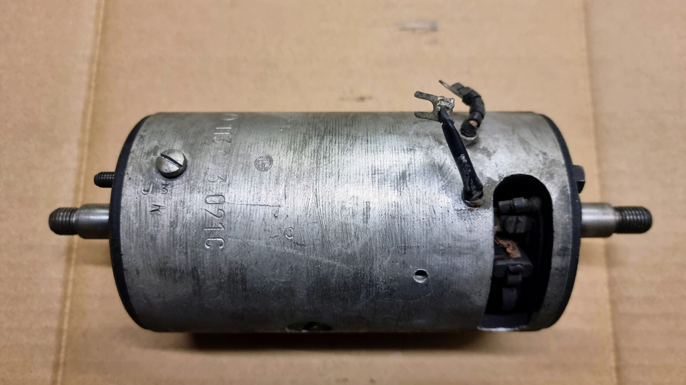
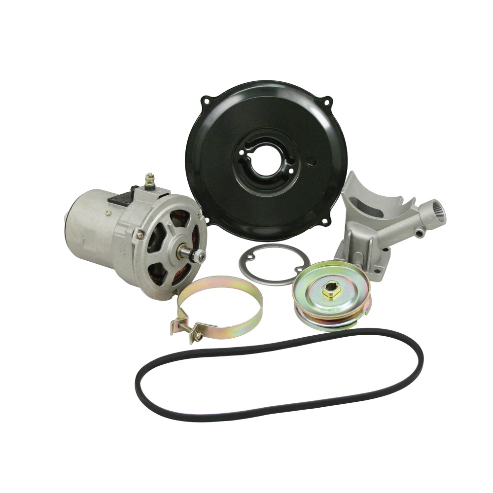

Heros Custom
GEN-F — Fusca gênese · Type 1
UNPUBLISHED — não publicar — sem site até OK Founder — camada gênese cultural · GEN-F1…GEN-F5 · Type 1 ≠ Type 3
GEN-F1…F5 ☐☐☐☐☐ · Cheque 1Q/cap · Ponte N0-A / F-P0
GEN-F — Fusca gênese
Neste e-book você entende de onde veio o Fusca Type 1 e por que isso muda o jeito de cuidar dele hoje. É aula de gênese — o que o carro é, por que é a ar, o que ele fez na família, o que a indústria travou no Brasil, e qual evidência você junta antes de orçar. Não é o curso elétrico N0. Não é o Cap. 2 de tinware sozinho. Este módulo é Fusca Type 1.
O carro popular que atravessou gerações — e ainda pede critério, não improviso.
- Plataforma
- Type 1 só · Type 1 ≠ Type 3
- 12 V no Brasil
- 1968 (não 1967)
- 12 V ≠ alternador
- Dínamo 12 V + regulador é caminho BR comum
- Fim de linha BR
- 1996 (2003 é México — fora do miolo BR)
- 1º nacional
- 03/01/1959 · planta 18/11/1959
- Estado
- rascunho 0.1 · UNPUBLISHED
Palavras deste e-book: Type 1 = Fusca / Sedan (não Variant, não Type 3). KdF = nome de origem, antes do Type 1 de exportação. aircooled = refrigerado a ar (latas + ventoinha + aletas). Passaporte = relatório do teu carro com foto e medida. evidência = foto + o que você aponta (não «parece»).
Taxonomia GEN-F1…GEN-F5
| ID | Capítulo | O que você leva |
|---|---|---|
| GEN-F1 | Origem Type 1 / KdF | O que é «Fusca» de verdade · Type 1 ≠ Type 3 |
| GEN-F2 | Por quê aircooled | Caminho do ar · ponte Cap.2 (sem número inventado) |
| GEN-F3 | Mobilidade família | Continuidade · still textual (tipada dedicada AUSENTE) |
| GEN-F4 | Indústria mundo + BR | 1968 · 1996 · Itamar 1993–96 · México fora |
| GEN-F5 | Ponte Passaporte | Checklist de evidência · N0-A / F-P0 |
Isto é
- Camada de gênese cultural Type 1.
- Para você que tem o carro da família e quer critério.
- Ponte para N0 (elétrica) e Cap. 2 (motor a ar) — outros PDFs.
Isto não é
- Não é o curso inicial elétrica (N0).
- Não é o Cap. 2 de tinware sozinho.
- Não é módulo Variant / Type 3.
- Não é checkout nem catálogo.
GEN-F1 — Origem Type 1 / KdF
O quê Nesta aula você vai entender de KdF / ideia de carro do povo ao Type 1 pós-guerra — o que é «Fusca» de verdade (plataforma Type 1).
Objetivo do aluno Dizer em uma frase: Type 1 ≠ Type 3. Saber que o DNA que importa aqui é boxer atrás, refrigerado a ar, chassi plataforma.
Por quê Misturar Variant / Type 3 na mesma história gera peça e aula erradas. O teu carro pede o diagrama do Type 1 — não o da família inteira VW.
Como
- A ideia: carro do povo, compacto, motor atrás, boxer a ar.
- A fábrica e a guerra interrompem a produção civil.
- O pós-guerra exporta o Type 1 — o DNA técnico não muda.
- Separe Type 1 (Fusca) de Type 3 (outro módulo).
O carro popular que atravessou gerações — e ainda pede critério, não improviso.
Nos anos 1930 a Europa discutia o automóvel acessível. Os protótipos que viriam a ser o Volkswagen nasceram com tração traseira e motor boxer refrigerado a ar — a arquitetura que, no Brasil, você chama de Fusca. A continuidade que este capítulo fixa é técnica, não mito político: plataforma, boxer a ar, latas.
| Período | Marco (Mestra · cite) |
|---|---|
| 1931–33 | Protótipos Volksauto (linhas Zündapp / NSU) com boxer a ar |
| 1934 | Contrato de desenvolvimento do Volkswagen |
| 1935–38 | Séries V1/V2/V3 → Type 60; fábrica em Fallersleben |
| 1938–39 | KdF-Wagen; produção civil ainda residual antes da guerra |
| 1939–45 | Fábrica voltada ao esforço de guerra |
| 1945–46 | Reinício da produção civil em Wolfsburg |
| 1948+ | Empresa e exportação se profissionalizam |
Depois da guerra o carro deixa de ser só projeto alemão e vira produto de exportação. A lógica permanece: carroceria de dois volumes, motor atrás, chassi plataforma, elétrica simples (inicialmente 6 V). É esse Type 1 — e não a família Type 2 / Type 3 — o núcleo deste e-book.
Type 1 ≠ Type 3. Variant, Brasília e SP2 são outro módulo. Este recorte é Fusca Type 1. A ficha N0-H1 Era B1 (1959–66) é outro slot: não é a foto de gênese KdF / 1946.
KdF-Wagen (gênese)
Commons · VIS-G1 / H1b

Type 1 1946 (pós-guerra)
Commons · VIS-G1 / H1a

Cheque Em uma frase: Type 1 ≠ Type 3 — o que isso muda na peça que você pede?
Erro comum Tratar todo VW antigo como o mesmo carro. Correção: Type 1 é o Fusca; Type 3 é outro módulo.
Evidência tipada H1b KdF + H1a 1946 (Commons). Não inventar foto de Anchieta aqui.
Próximo Quando estiver pronto, vá para GEN-F2 — por quê a ar.
GEN-F2 — Por quê aircooled
O quê Nesta aula você vai entender o motor boxer refrigerado a ar: latas, ventoinha, aletas; o óleo também tira calor.
Objetivo do aluno Nomear 3 peças do caminho do ar: ventoinha · lata · aletas.
Por quê Sem entender o fluxo de ar, você aceita superaquecimento como «normal». No Type 1 a ar, lata incompleta não é detalhe — é o motor sem caminho.
Como
- Ar vs água: não há radiador de água neste motor.
- A correia gira a ventoinha; as latas obrigam o ar nas aletas.
- Aletas sujas / poeira = calor preso.
- Óleo lubrifica e tira calor. Anatomia completa = Cap. 2 (outro PDF).
O carro popular que atravessou gerações — e ainda pede critério, não improviso.
O motor do Type 1 é um quatro cilindros opostos (boxer), comando no bloco, refrigerado a ar. Sem lata, o fluxo foge. Sem correia, a ventoinha para. Óleo baixo também deixa o motor quente. Este capítulo não inventa número de aperto nem folga — isso fica fora. Sem cv neste e-book.
Caminho didático, sem número inventado: correia → ventoinha → latas → aletas. Ponte: Cap. 2 — anatomia do motor boxer a ar (outro PDF).
Tinware completo (AUR1500)
Commons · P0

{kind=link}
Tinware completo (Coccinelle)
Commons · P0

.jpg){kind=link}
Cheque Nomeie 3 peças do caminho do ar (ventoinha · lata · aletas).
Erro comum Mito: «é a ar, então não precisa de nada». Correção: sem tinware o fluxo foge; o motor superaquece.
Evidência tipada AUR1500 + Coccinelle (latas no lugar). Stamp B = AUSENTE (não inventar).
Próximo Quando estiver pronto, vá para GEN-F3 — mobilidade família.
GEN-F3 — Mobilidade família
O quê Nesta aula você vai ver o Fusca como carro de trabalho, lazer e herança — gerações no mesmo chassi Type 1.
Objetivo do aluno Escrever em uma frase o que você quer preservar neste carro.
Por quê Quem cuida de um Type 1 da família compra continuidade, não só performance. Sem critério, a restauração vira lataria bonita e elétrica molhada.
Como
- Família e trabalho no mesmo chassi — o carro popular atravessou gerações.
- Decida: uso de fim de semana ou restauração ampla.
- Valorize com evidência (foto + medida), não com discurso.
- Não deixe elétrica e umidade «pra depois» da tinta.
O carro popular que atravessou gerações — e ainda pede critério, não improviso.
No Brasil o Type 1 virou o carro que o pai ensina o filho a dirigir e, décadas depois, o mesmo chassi volta à oficina. O 1200 / 6 V da primeira era nacional (1959–66) e o Itamar dos anos 1990 são o mesmo Type 1 — não o mesmo diagrama. Você data o carro pela ficha; o cuidado, pela evidência de hoje.
Eras B1–B5 (cite): o recorte muda tensão, caixa e gerador. A aula elétrica completa é N0 — não este capítulo.
Cheque O que você quer preservar neste carro? (1 frase)
Erro comum Restaurar só a lataria e deixar elétrica / umidade pra depois. Correção: continuidade pede evidência agora — foto e medida.
Evidência tipada Slot família/rua = AUSENTE. Não preencher com stock nem IA.
Próximo Quando estiver pronto, vá para GEN-F4 — indústria mundo + BR.
GEN-F4 — Indústria mundo + BR
O quê Nesta aula você vai ler a linha do tempo clara: produção mundial, Brasil, marco 12 V BR = 1968, fim Type 1 BR 1996, Itamar como faixa (1993–96).
Objetivo do aluno Responder: 1968 no Brasil significa o quê na elétrica?
Por quê Ano do documento ≠ tensão medida. Diagrama genérico erra. Comprar peça «porque o CRLV diz um ano» queima lâmpada e bobina.
Como
- Wolfsburg é o berço. O Brasil não é Wolfsburg.
- CKD Ipiranga (2.268 Sedan) não é a fábrica do nacional.
- 1º Type 1 com peças nacionais: 03/01/1959. Planta Anchieta: 18/11/1959.
- Meça parado. 12 V BR = 1968. 12 V ≠ alternador.
O carro popular que atravessou gerações — e ainda pede critério, não improviso.
| Quando | Marco Type 1 (cite · sem volume inventado) |
|---|---|
| 1950 | Primeiros VW no Brasil (importação / porto) |
| 1953–~58 | CKD Ipiranga: 2.268 Sedan. Não é a fábrica do nacional. |
| 03/01/1959 | 1º Type 1 com peças nacionais — Anchieta (SBC) |
| 18/11/1959 | Inauguração oficial da planta Anchieta |
| 1959–66 | 1200 · 6 V · primeira era nacional |
| 1967 | 1300 (BF) — ainda pode ser 6 V; 12 V não veio com o 1300 |
| 1968 | Sistema 12 V no BR (não 1967) · 12 V ≠ alternador |
| 1986 | Primeiro encerramento da produção do Fusca BR |
| 1993–96 | Itamar — retorno e faixa de fim (não misturar aula) |
| 1996 | Fim de linha BR. 2003 é México — fora do miolo BR. |
1968 no Brasil significa: o sistema de fábrica passa a 12 V. Não significa «já é alternador». Dínamo 12 V + regulador é caminho BR comum. 1967 ainda pode ser 6 V — você mede parado, não adivinha pelo documento.
México 2003 não entra neste recorte BR. Itamar = faixa 1993–96, não cifra inventada. Tipada de Anchieta / fábrica BR = AUSENTE (HOLD).
caixa 8 pólos
8 pólos · appletree

caixa 12 pólos
12 pólos · CIP1

dínamo vs alternador
par de contraste


Cheque 1968 no Brasil significa o quê na elétrica?
Erro comum Comprar peça 12 V / alternador só porque o CRLV diz um ano. Correção: 12 V BR = 1968; 12 V ≠ alternador; a foto da caixa decide 8 vs 12.
Evidência tipada Caixa 8 + caixa 12 + par dínamo/alt. Anchieta foto = AUSENTE.
Próximo Quando estiver pronto, vá para GEN-F5 — ponte Passaporte.
GEN-F5 — Ponte Passaporte
O quê Nesta aula você vai passar da história ao relatório com foto e medida — o mínimo de evidência antes de acusar peça ou orçar motor.
Objetivo do aluno Listar 4 evidências mínimas do teu carro.
Por quê Gênese sem ponte vira só nostalgia. Heros fecha em critério: foto + medida, não «parece».
Como
- Junte o que se vê e o que se mede — sem inventar boletim.
- Marque o checklist abaixo (☐).
- Elétrica profunda = N0-A (outro PDF). Motor = Cap. 2 / F-P0.
- Este e-book não substitui a aula elétrica.
O carro popular que atravessou gerações — e ainda pede critério, não improviso.
Neste material, Passaporte = o relatório do teu carro com foto e medida (ano · tensão · caixa · gerador). Sem essa capa = não fecha o diagnóstico. Type 1 só.
Checklist de evidência
- ☐ Ano do veículo (Passaporte / tipagem — não só o documento)
- ☐ Tensão medida parado (6 / 12 / mista) — 12 V BR = 1968
- ☐ Foto da caixa (8 vs 12 = o que se vê)
- ☐ Foto do gerador (dínamo ou alternador — 12 V ≠ alternador)
- ☐ Massa / retorno visível (critério N0 — outro PDF)
- ☐ Tinware se o assunto for motor (latas no lugar — Cap. 2 / F-P0)
Próximo: pack N0-A (elétrica simples) · Cap. 2 (anatomia a ar) · F-P0 (cuidado de hoje) — outros módulos.
Quando estiver pronto: peça uma vistoria / Passaporte na oficina com as fotos certas — ou continue em N0-A / F-P0. Sem checkout neste material. Sem canal de mensagem neste PDF.
UNPUBLISHED. Sem site até OK Founder. Este e-book não substitui a aula elétrica.
Cheque Liste 4 evidências mínimas do teu carro.
Erro comum «História bonita» sem foto da caixa / sem medir. Correção: gênese sem evidência não fecha diagnóstico.
Evidência tipada Reuse N0 caixa/dinam/alt (GEN-F4). Flatlay = AUSENTE.
Próximo Quando estiver pronto: N0-A · Cap. 2 · F-P0. Este e-book acaba aqui.